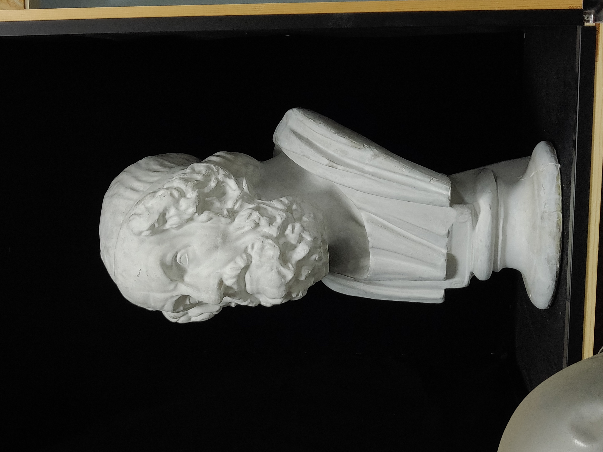
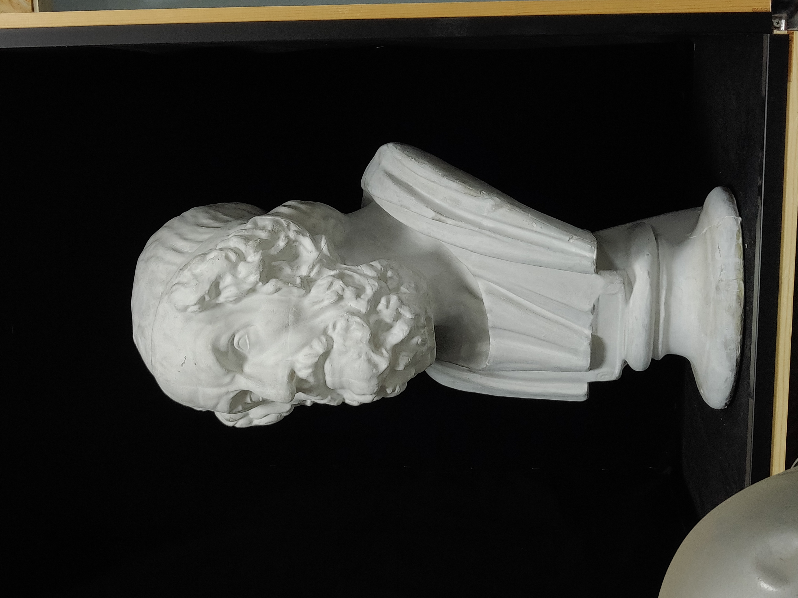

形体分解训练¶
- startat
2020-07-22
- endat
2021-05-06
- status
Finished
要求¶
石膏像写生，光影为主，线条为辅，尽量使用直线，用最少的面画出形体。
注解
这个练习对工具有一些要求，如果使用铅笔作画，需要使用 260g 或以上的素描纸， 并备好 H, 2H 的硬铅
形体及其分解¶
同样，下面的内容在 造型的诞生 中已经讲过了。
推荐阅读 《向大师学绘画·素描基础》 、伯里曼的随便什么书。
分解形体的依据¶
写实绘画，以内在构造为主，外在形态为辅：
内在构造：内部结构的组合关系（对于生物来说是解剖关系）
外在形态：结构体块的组合和运动
对于不同的物象，其内在构造的知识是需要分别学习的，物象千万万难以学尽， 因此 通过观察揣摩形体组合的合理性 是需要掌握的技能。
通过观察同类物象来归纳共性
观察该共性在所要描绘的物象上是否明显——根据情况强化或弱化
形体的组合 和形体的分解相反，从组合的视角出发能够更有目的地分解形体。
分解形体的原则¶
由大到小，先画大形体，再画小形体
由暗到亮，先画暗面再画亮面（由作画媒介决定）
由共性到特性，先根据对象的共性把体积感画出来，再调整形体突出对象的特性
形体要挨着画，体积感是在形体和形体之间的连接产生的
结构体块¶
关键的形体不一定在起伏和深浅上明显，但在物象的内在构造中起着关键的衔接作用 。
晓飞老师把这些关键的形体叫做 结构体块 ，结构体块往往是微小的不明显的起伏 （大的明显的就不需要单独拎出来讲了，很直观），在画面上画出这些体块能够暗示物象 的内在构造，增加画面的信息量。
对内在构造的了解以及良好的观察力是识别结构体块的两大途径。
人的结构体块¶
额丘中心的高点
额头、后脑勺、侧脸的连接点
连接两个不可变体块大体块的体块
后颈肉（连接后脑勺与脖子）
脖子和肩&胸腔的连接处
肩上的肌腱（分割了人的正面与背面）
观察方式¶
以下的几种观察方式都赖于良好的空间想象能力和空间感受能力。
注解
画的时候用余光看物象，往往能比较容易地感受到物象的空间
- 看形体之间的联系
- 对应和对称
在画一个形体的时候，要盯着这个形体对应的形体看，例如在画左眼的时候， 要注意物象的左和右眼之间形成了何种空间关系
不完全对称的物象，它们的形体是可能是不对称的，但「势」是对称的 （在空间上都有朝同一个方向的趋势），要把这两个形体形成的「势」画出来
- 附着与穿插
大的形体是由小的形体堆叠或附着形成的，画小形体的时候要注意遵从它在 大形体中的「势」
- 看 两种匹配关系
之前已经提过，要确保每一个画出来的暗部都经过这两种匹配关系的分析 在形体阶段中，可以看到匹配关系的另一种解释：
多个形体在光源的作用下，其暗部融合在一起，该暗部的形状由这些形体共同决定
一个复合形体在光源的作用下会有多个暗部，这些暗部共同地组成了这个复合形体的背光面
关键的起伏¶
物体上的微小的关键起伏，往往暗示了其内在构造。 我们需要看出单个形体和周边形体之间的联系，以及这个联系凸显出的关键起伏 根据面的朝向画出轮廓，而非看轮廓线的角度
待处理
没有很懂
分析每一个面的走向（及形成该走向的原因：中立、拉力等） 视觉上被严重压缩的形体尤要仔细分析
寻找特征¶
待处理
暂时还不太能触及到，所以没有太多的总结
形体的特性可以说是「和共性不一样的地方」，体现为：
轮廓线/面的内部/面与面之间的长短宽窄
关键的转折在何处发生
注解
以上的变化不能通过死盯着某个形得出，而应当通过对比共性， 在 大的视觉感受上 的对比得出
作画步骤¶
作画步骤的意义在于 指导在作画过程中，特定阶段的目的（抽象的）， 目标（具体的，能明确判断的）以及达成的手段 。
好的步骤的目的是有逻辑的，自洽的，目标是单一的，明确的。
注解
一个常见的误区就是在每个阶段中都把 美 作为目的之一，会影响对其他目标的判断
即使以美为作为绘画目的，也不必在每个阶段中都以引入，一个佐证是古典肖像技法
（可能指的是 :search::The Flemish Technique ）会有将青灰色铺满皮肤的瘆人的
「死人灰」阶段，青灰底作为素描关系的梳理，能够为后面的步骤提供指导，
在最终的画面中亦能够为皮肤提供若隐若现的青灰色，呈现出最终的美。
「遵循步骤」并不简单，特定地针对这套步骤，需要破除很多观念：
不以美为目的，更激进地，不以 「绝对的形准」作为目的
不混淆目的与目标，前者务虚后者务实
保持清醒，朝着单一的目标前进，避免无效的乱画—— 对我来说， 目标明确是提高作画速度的最有效方式。
注解
尽管遵循步骤如此重要，但步骤不是用来限制自己的
在没有形成肌肉记忆之前，严格遵循步骤有助于触及更高的高度
在进度停滞的时候，要注意自己是不是偏离了该阶段的目标
0. 找亮暗面¶
- 目的
起型
- 目标
找出所有的亮暗面
- 手段
亮暗面 的定义、各种观察手段
纯粹的「找亮暗面」应该在 光影分解训练 中训练过了，从光影训练的一个项目 变成形体训练的一个步骤，其目的发生了改变：因而侧重点也改变了：
光感适中即可，颜色尽可能浅，方便修改
更注意型的准确型 —— 作为一个长期的作业，型越不准，后期要编的地方会越多
不变的是：
不考虑固有色
严谨地区分亮暗面，在难以判断的地方绝对不看颜色
由大到小地找出 所有面 再小的地方，非画面中心的亮暗面也要考虑到
遵循 两个匹配关系 ，抄形状是下下策
小技巧
在初窥形体的门径后，引入形体意识，可以更多地靠直觉画， 而把 两个匹配关系 作为检查手段，速度上会快一些
面对特定问题的特定思路：
两个匹配关系 告诉我们要注意注意暗部为哪些形体服务， 在多个尺度上，服务的形体可以有多组（比如下巴的底面同时也作为头的底面）， 最大的那个尤要注意——因为往往被忽略
为每一个投影明确投影物和投影所在物。换句话说，明确每个投影的成因
暗部是有明确的边界的。但因为深灰的影响，观感上似乎总是比实际上更大
1. 梳理秩序¶
- 目的
规划画面不同区域的用色
- 目标
画出深灰、浅灰、白、浅黑、中黑、黑 六个色层
- 手段
归纳面的方向
这一步骤应当和 0. 找亮暗面 都属于光影问题，但区别在于前者有可以通过纯碎的理性判断， 而后者难以做到，究其原因：
物象往往有多个形状各异光源（而非理想的点光源），视情况还需要考虑复杂平面上的反射
物象有不同的固有色
面的方向，或者说面的 空间角 是一个连续的量，人眼没有能力精确地对其归纳分类
秩序问题落实到画面上是颜色问题。规划整个画面中各区域的用色。后面 2~N. 梳理形体 的时候， 面的颜色都要依据这一步的规划。因此， 在解决形体问题之前，必须先解决秩序问题。
注解
某种意义上，梳理秩序也就是也是画了最大的形体
同样，类似的训练在 光影分解训练 中也存在，但引入了固有色、多光源、 反光等 Real World 的因素，
主观地看深浅只能占很少一部分，主要还是按面的方向给色层
固有色的不同通过同种色层的深浅区别，不同色层在不同固有色之间的比较毫无意义
反光可以认为是和主光源相反方向的光，往往对形体和空间起破坏作用，需要尽量弱化
在梳理好主光源的情况下，再引入次光源是
注解
色层是建立在面上的，面的方向一旦改变，给颜色的时候就要重新考虑
给颜色的时候一定要 明确自己在画六个色层中的哪一个 ，手头上可以不那么准， 但意识上一定要明确
限制才能带来秩序 ，颜色 宁可雷同 也不要超出六个色层的限制
2~N. 梳理形体¶
首先确定要梳理的形体
在形体中找面：这个形体由哪些面组成，面从哪里开始，在哪里结束
确定每一个面都属于哪个形体的什么部分
注解
搞明白这个面属于形体的哪一部分，画的时候的空间意识就会更强， 会更主动地往体积感更强的方向画，能更容易地 盯着空间画
通过尽量少的面建立 特征
注解
如何建立面 / 如何区分不同的面？
通过色层：为每个面分配颜色（白、浅灰、深灰、黑、中黑、浅黑） 分配的依据主要是方向
注解
注解
给颜色时 不要平涂 ，用线的方向要跟随 形体的走势
平涂是 光影分解训练 中的要求，在全因素素描中， 笔触的方向能够为形体的方向提供暗示， 若方向一致， 能带来比平涂更强烈的空间感。若不一致，则会使画面的空间感混乱。 因此： 笔触的方向应当总和形体的方向一致，否则，不要在画面中出现任何笔触 。
- 如何判断用线的方向？
一般来说，用线的方向就是画者的视角看， 该形体 在空间上跨度最大的方向
待处理
补图例
通过结构：
注解
色层是有限的，当需要区分被归纳在一个色层里的不同面时，就需要通过结构区分
不同走势的面，给色层时可以不同方向的用线区分
一边为轮廓线的面，可以通过轮廓线的变化区分
根据 分解形体的原则 之四，确定下一个要梳理的形体，直至处理完整个画面
注解
在梳理过程中，应当避免修改大的形体，让现有的形体互相匹配即可
形体推移形成空间¶
N+1. 画结构¶
在现阶段的训练中，塑造是 作画步骤 的最后一步。
注解
如果使用铅笔作画，那在这一步，需要使用削得极尖的 HB, H, 2H 级别的铅笔。 用（大约 500 目的）砂纸可以方便地打磨铅笔头。
此时的画面，画面的黑白灰秩序已经确立，在已有的秩序下，有三种「形体」需要被塑造：
- 结构
结构被定义为「形体和形体之间的联系」，也可以说是「形体和形体之间凹处的小形体」。 画结构，就是将之前 梳理 好的，孤立的形体联系起来， 形成一个饱满的、结实的物象
- 细节
细节则是「不影响形体和结构的小形体」，比如木头的裂纹、石膏的磕碰，适当的细节 能强化物象的质感，加强真实感
注解
细节的塑造在少不在多，需要取舍。一般来说：
亮部由于暗部
转折处优于平面
最终塑造与否还是要回归到画面上。
- 最小的形体
在 2~N. 梳理形体 结束之后，我们已经得到了最小的形体（排除结构和细节）, 并将其用尽量少的面建立起来了，我们需要让面与面的过渡和实际的物象相符。 面内部的变化也要细致地表现出来
待处理
瞎说的，还得继续修正
塑造的时候更需要讲究用线，一般有两种线：
- 结构线
顺着形体的走势
- 包裹线
横着的形体用竖线，竖着的形体用横线，转折处用交叉线
待处理
何时用结构线，何时用交叉线？

塑造中的荷马像，局部 注：晓飞老师改过¶
被解开的疑惑¶
如何起稿¶
「如何起稿」是从我刚开始学习素描就一直苦恼的问题，在晓飞老师的训练中并不教你如何起稿。 因为这不是需要被解决的问题，「不会起稿」仅仅是「不会画」的一个体现， 而「不会画」则可以归因到「没有造型意识」，在初窥造型艺术的门径后，我总算能够总结出 自己在画光影绘画时的起稿步骤了：
观察方式 和 分解形体的原则 组合起来就是「如何起稿」， 前者提供了观察手段和判断标准，后者提供了明确的作画路径。
带着空间感画出物象大的剪影，画出主要形体的大致轮廓
注解
- 什么叫「带着空间感画」？
有点类似 盯着空间画，在起稿阶段，更具体一点， 需要搞清楚物象在空间上的关系，将其复制到纸面上，想象三维的物象投射在二维的纸上， 你的每一条线都是三维空间的棱在纸面上的投影
在有了轮廓的物象上找大的暗面，用浅色平涂，以光感达到 最佳 为准
注解
大部人都能够区分出不同画面光感空间感的强弱，这是我们长时间注视着 这个光影交错的现实世界所习得的敏锐。而「最」的程度，取决于你对自己画面的要求， 也限制了整张画最终能达到的高度
对于对称的物象（人、动物、建筑），找暗面的时候一定要「对称和对应」地找
两种匹配关系 能够处理更平凡的情况：
大形体上的多个小形体的暗面共同组成了大形体的暗面
带着光感继续找更小的暗面，判标准同上，直至找完 所有的 暗面
什么是「形准」¶
广义来说，和谐的形就是准的。
注解
可以看看 忻东旺 后期作品中的形体
从写实绘画的角度出发，匹配 的，有空间感的、 特征明显的形就是准的。
在变化的视角下画画¶
在不用工具辅助的情况下，视角是一个难以控制的变量。即使 ref:在地面上标记了你的位置 <在地面上标记你的位置>
也不能保证观察物象的你每次观察的时候挺直腰的程度，仰头的角度是一致的。
在画大尺幅的画时，不可避免的还要靠近物象，此时视角中的物象更是和之前不同。
警告
广为流传的「看轮廓线的斜率」、「看外轮廓组成的三角形形状」在这个体系下应当杜绝， 尤其是后者。
「斜率」和「三角形形状」都会随着视角变化，由空间距离很远的边组成的三角形 甚至会随着视角变化而产生剧烈的变化，导致最后画出来的形其实是若干个视角拼成的「多视图」
建立自己的作画步骤¶
在教学的过程中老师并没有说道明确的作画步骤，但要求每个人在学习过程中形成自己的作画步骤。 好的作画步骤应当是明确的，明确每个步骤的 要做的事情 和 期待的结果 以及 停止的边界 。
在初学阶段最好面面俱到，即把所有的事情都考虑到，由浅到深由大到小 逐级推进，时刻把空间和体积放在首位。
目前我总结出来的步骤是：
故障排除¶
找出来的形体没有体积感怎么办？¶
一般是陷入了抄形状的泥潭中，需要整理一下思路，从以下角度出发：
如何处理多光源的情况？¶
先确定一个主光源，判断色层时主光源占主导地位。在 2~N. 梳理形体 的中间阶段再介入次光源。 一般来说，多个光源叠加的暗部为中黑。
作业¶
多光源下的 荷马 像，左 3/4 侧面：
 

多光源下的 荷马 像，右 3/4 侧面：


多光源下的 皮埃尔·高乃依 像，右 3/4 侧面：
待处理
还没画完呢……等 12 月回去接着画。

在蔓纯老师画室画的，单光源下的戴帽子的老人像，右 3/4 侧面：


变更记录¶
- 2021-05-09
增加